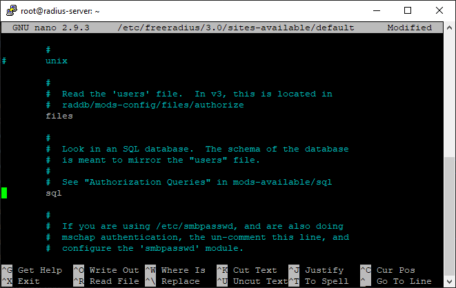
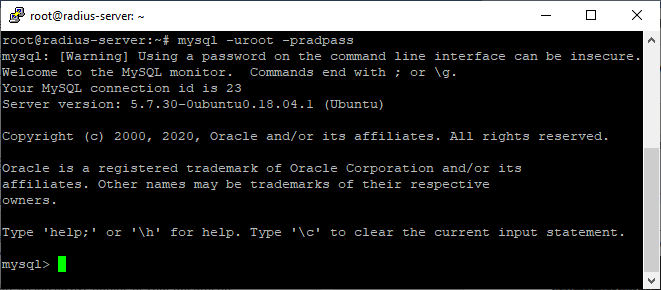

Tutorial Instalasi dan Konfiguasi freeradius
Setelah mysql-server sudah terinstall dan running tanpa error, langkah selanjutnya adalah install dan konfigurasi freeradius.
# apt -y install freeradius freeradius-utils freeradius-mysql
Konfigurasi freeradiusNOTE: untuk versi 2 kebawah, lokasi freeradius ada di /etc/freeradius tidak ada "/3.0/". Jadi cukup "/etc/freeradius/"
# cd /etc/freeradius/*/mods-enabled
# ln -s ../mods-available/sql sql
# nano /etc/freeradius/*/sites-available/default
Hilangkan tanda “-“ dan “#” didepan sql semuanya.

Gunakan Ctrl + w supaya lebih cepat mencarinya. Simpan dan exit text editor (Ctrl + o --> enter --> Ctrl + x)
# ln -s ../mods-available/sql sql
# nano /etc/freeradius/*/sites-available/default
# nano /etc/freeradius/*/sites-available/inner-tunnel
Hilangkang tanda “-“ dan “#” didepan sql semuanya.
Simpan dan exit text editor.
# nano /etc/freeradius/*/mods-available/sql
------------- Edit bagian ini --------------
driver = "rlm_sql_mysql"
---------------------------------------------
dialect = "mysql"
---------------------------------------------
server = "localhost"
port = 3306
login = "root" # user mysql
password = "radpass" # password mysql
radius_db = "radius"
---------------------------------------------
read_clients = yes
---------------------------------------------
client_table = “nas”
----------------------------------------------
------------- Edit bagian ini --------------
driver = "rlm_sql_mysql"
---------------------------------------------
dialect = "mysql"
---------------------------------------------
server = "localhost"
port = 3306
login = "root" # user mysql
password = "radpass" # password mysql
radius_db = "radius"
---------------------------------------------
read_clients = yes
---------------------------------------------
client_table = “nas”
----------------------------------------------
 Simpan dan exit text editor.
Simpan dan exit text editor.
# chgrp -h freerad /etc/freeradius/*/mods-enabled/sql
Selanjutnya membuat database “radius”.
# mysql -uroot -pradpass
> create database radius;
> exit;
Import database
> create database radius;
> exit;
# mysql -uroot -pradpass radius < /etc/freeradius/*/mods-config/sql/main/mysql/schema.sql
# ln -s /etc/freeradius/*/mods-available/sql /etc/freeradius/*/mods-enabled
Konfigurasi Client
# ln -s /etc/freeradius/*/mods-available/sql /etc/freeradius/*/mods-enabled
# nano /etc/freeradius/*/clients.conf
tambahkan pada baris terakhir:
-------------------------------------------
client hotspot {
ipaddr = 192.168.5.0/24 : ip server
secret = radpass : password untuk mengkoneksikan dengan mikrotik
}
-------------------------------------------
Simpan dan exit text editor.tambahkan pada baris terakhir:
-------------------------------------------
client hotspot {
ipaddr = 192.168.5.0/24 : ip server
secret = radpass : password untuk mengkoneksikan dengan mikrotik
}
-------------------------------------------
Testing freeradius service
# systemctl stop freeradius
# freeradius -X
Jika tidak terdapat error, maka akan muncul status "ready to process request" seperti di atas.# freeradius -X
Selanjutnya cek status freeradius
# Ctrl + c
# systemctl start freeradius
# systemctl enable freeradius
# systemctl start freeradius
# systemctl enable freeradius
# systemctl status freeradius
Silahkan cek status freeradius service. Instalasi dan konfigurasi yang benar maka statusnya akan Active (running). Jika belum cek kembali langkah-langkah diatas.Selanjutnya menambahkan user ke database melalui mysql.
Login ke mysql
# Ctrl + c
# mysql -uroot -pradpass

# mysql -uroot -pradpass
> USE radius;
> INSERT INTO radcheck VALUES (1, 'demo', 'Cleartext-Password', ':=', '12345');
> INSERT INTO radcheck VALUES (2, 'test', 'Cleartext-Password', ':=', '54321');
> exit;
Testing aksess
> INSERT INTO radcheck VALUES (1, 'demo', 'Cleartext-Password', ':=', '12345');
> INSERT INTO radcheck VALUES (2, 'test', 'Cleartext-Password', ':=', '54321');
> exit;
# /etc/init.d/freeradius restart
# radtest demo 12345 localhost 10 testing123
# radtest test 54321 localhost 10 testing123
"Received Access-Accept" berarti freeradius server ini sudah terkonfigurasi dengan benar.# radtest demo 12345 localhost 10 testing123
# radtest test 54321 localhost 10 testing123
Jadi inilah fungsi dari RadiusPanel yaitu untuk mempermudah dalam menambahkan user dan atau memanagement freeradius server.